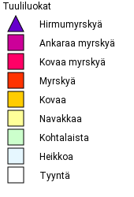
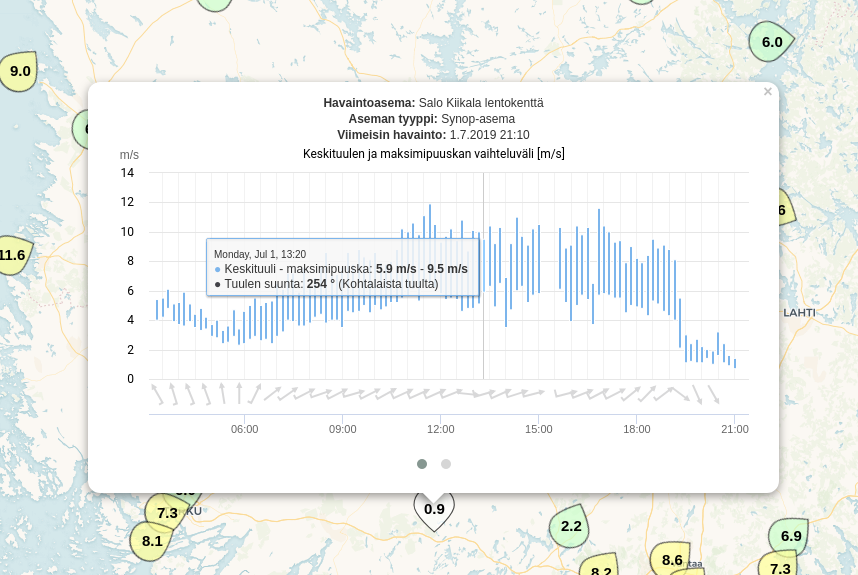
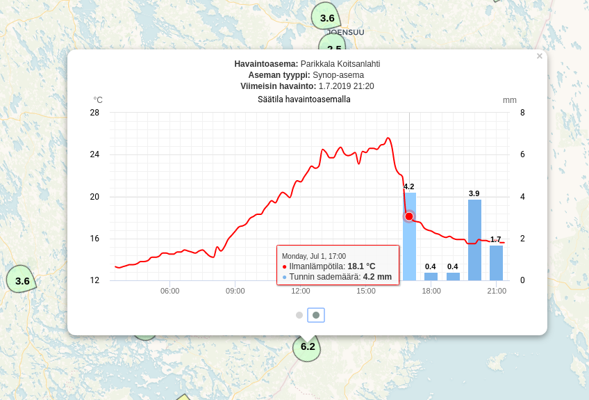

Site information
tuulikartta.info is a personal side project that grew out of a model aircraft hobby, with the idea of offering users (near) real-time wind observations. Since then the site has expanded to cover weather observations more generally.
The site displays observations updated every 10 minutes from Finnish Meteorological Institute weather stations and Finnish Transport Infrastructure Agency road weather stations: mean wind speed and maximum gust, temperature, precipitation amount and intensity, visibility, total cloud cover, and the current prevailing weather. In addition, the site calculates the maximum gust and mean wind speed for the hour preceding each observation on the fly.
A 10-minute observation typically refers to the average over a 10-minute measurement period, while wind gust refers to the maximum 3-second average measured within that 10-minute period.
Observation parameters
Wind speed classes

Wind speeds are divided into nine classes, drawn on the map using the colors shown in the table below.
Strong winds and storm-force winds typically occur in Finland only occasionally, mainly over sea areas and fells, whereas gusty wind can occasionally reach storm-force values even over land areas.
Summer thunderstorm squalls, for example, are therefore not technically storms, but rather severe local weather events (squalls).
Winds that cause damage are often very gusty. Brief, short-lived 5-10 second gusts exceed the 10-minute mean wind speed by roughly 1.5 times depending on conditions, and by up to about 2 times at most.
When wind speed exceeds 16-17 m/s, tree branches start to break; speeds above 20 m/s start to break and fell trees and cause minor damage to roof structures.
More information is available on the Finnish Meteorological Institute's wind theme pages (in Finnish).
Visibility and current weather
Measurements of current weather and visibility are based on measuring the scattering of light. This type of optical sensor has a near-infrared light transmitter and receiver. The more water droplets, ice crystals or other particles there are in the air (e.g. rain or snow, dust, smoke), the more of the transmitted light scatters back to the receiver. The optical sensor calculates visibility from the scattered light, and also attempts to determine the current weather (e.g. the type and form of precipitation).
Meteorological visibility refers to the transparency of the air. Visibility is not affected by darkness or terrain obstacles. Meteorological visibility is reduced by dry haze (haze, dust, smoke) or moist haze (mist, fog, precipitation). When visibility is good, objects can be seen from more than 10 kilometres away; with moderate visibility, 4-10 kilometres; and with poor visibility, 1-4 kilometres. Visibility below 1 kilometre is very poor.
Total cloud cover
Total cloud cover is often measured in eighths (oktas). The sky can be divided into eight parts, which makes estimating total cloud cover easier.
Variable cloudiness usually refers to a situation where, during the forecast period, cloud cover varies between less than 3/8 and more than 6/8. Variable cloudiness is common in summer, but clearly rarer in winter.
| Description | Value | Description |
|---|---|---|
| 0/8 | Clear | |
 |
1/8 | Almost clear |
| 2/8 | Fairly clear | |
| 3/8 | Partly cloudy | |
| 4/8 | Fairly cloudy | |
 |
5/8 | Partly cloudy |
| 6/8 | Fairly cloudy | |
 |
7/8 | Almost cloudy |
 |
8/8 | Cloudy |
| 9/8 | Cloud cover cannot be determined |
Observation history
Clicking a weather symbol also lets you view station-specific observation history. Not all stations measure the same parameters, however, so there may be gaps in the data. You can view observations for different parameters by dragging the chart sideways or by clicking the grey dots.


Wind animation
The map can display a wind animation showing mean wind speed or gust as moving particles. The animation is not based on a weather forecast model - it is calculated in the browser from the current wind speed and direction measurements at the observation stations. The areas between stations are filled in using inverse distance weighting to form a regular grid, which is then drawn on the map as moving particles.
Because the animation is based on a sparse network of stations rather than a forecast model, it mainly illustrates the general flow and direction of the wind field - it cannot reliably reproduce local phenomena such as individual gusts or small-scale eddies.
Convergence and divergence
When the wind animation is on, you can also enable the convergence and divergence layer from the settings. This layer colors the areas where wind is converging (convergence, blue) or spreading out (divergence, red), calculated from the same grid as the wind animation.
Convergence refers to an area where more air flows in than flows out - the air piles up and rises, which can support cloud and precipitation formation. Divergence is the opposite: more air leaves an area than flows into it, and the air generally sinks.
The quantity is calculated as the sum of the local rates of change of the east-west and north-south wind components, and its unit is 1/s (per second). Typical values for weather phenomena are on the order of 10⁻⁵-10⁻⁴ 1/s. The map's color scale is not tied to a fixed value, though - it always scales to the strongest value in the current grid, so a fully colored area represents the strongest convergence or divergence at that moment, not a predetermined threshold.
Because the layer is based on a grid interpolated from a sparse station network rather than a forecast model, it should be treated as an illustrative approximation of convergence and divergence areas in the wind field, not a precise meteorological analysis.
Data sources
The observation data is open data provided by the Finnish Meteorological Institute.
Planned future features include more comprehensive radar products, and possibly weather observations from neighbouring countries (Sweden, Norway, etc.) further down the line.
Privacy
The service currently does not use analytics or tracking cookies. The site stores things like your last viewed map location and language setting in your browser's local storage (localStorage), so that it remembers your choices on your next visit. This data stays only on your own device and is never sent to the server. No personal data is collected about users of the service.
Read more in the privacy policy (in Finnish).
Other
The site's source code is available here